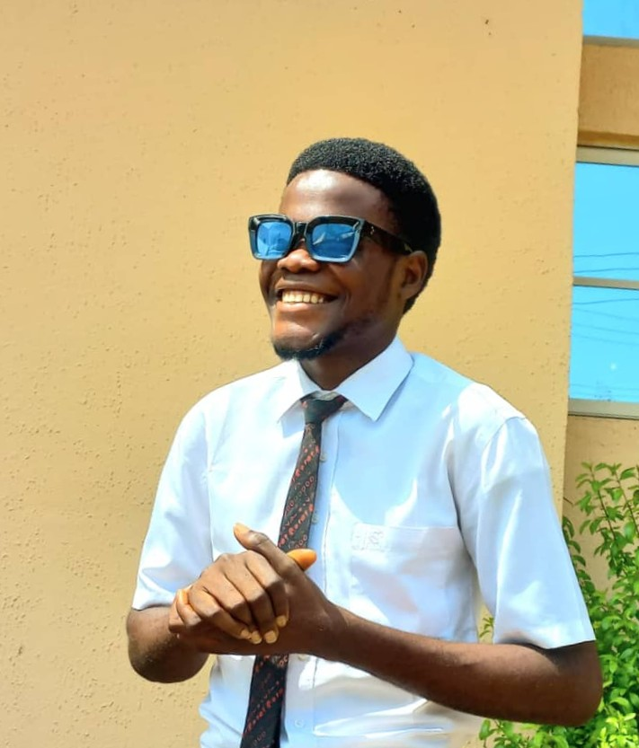

Elvis Uchenna Uwakwe | WDD 130
Hello everyone! My name is Elvis Uchenna Uwakwe. I am from Afikpo LGA, Ebonyi State, Nigeria, and I am currently a student in the BYU Pathway program. As a dedicated student, I have a passion for learning and connecting with others.I enjoy listening to music and singing, and one of my favorite hobbies is cooking. I strive to be creative every day, which has helped me develop various skills, including barbering, graphic design, and most recently, a strong interest in the tech industry. I am currently focusing on expanding my knowledge and skills in technology, aiming to leverage my creativity and problem-solving abilities to make a meaningful impact in the life of people around ma and in the world. Thank you for your time! I look forward to learning and growing with you all.